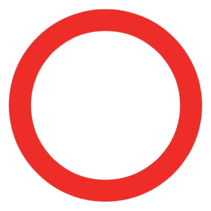
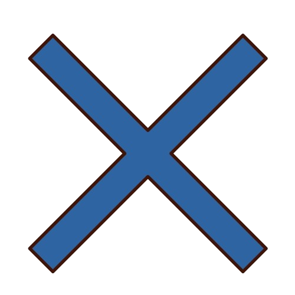
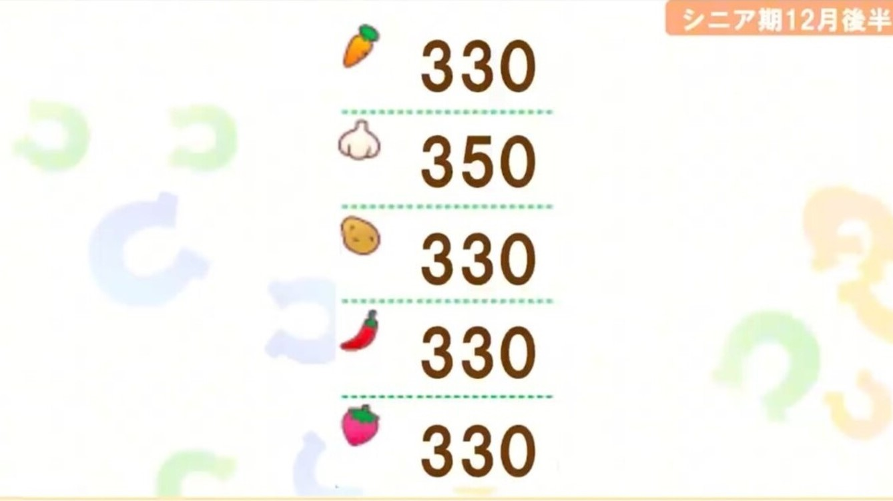

デビュー前
- → 理事長と練習
- → 料理を作る
- → 優先的に練習
- → お出かけも可
→ 諦めてもいいかも
畑レベルを上げるときは野菜が3つ溜まっているとき
デビュー後(ジュニア期)
- → 最優先で練習
- → 優先的に練習
- → 以降は食材確保
- → 理事長とお出かけ
→ 継続目安
→ 諦めたほうがいいかも
畑レベルはにんにく以外Lv.2で終わる
クラシック期前半
- → 最優先で練習
- → レースへ
- → お出かけへ
- → お休みへ
- → お出かけへ
- → 賢さへ
- → レースorサポカ2人以上の練習へ
- → お休みへ
にんにくを5月前半にLv.2、以外をLv.3にする
畑レベルが足りない場合下振れ
料理ポイントは4,000Pt以上を目標に
・料理を作るタイミング
友情トレ2人以上or友情1人+サポカ1人以上体力80以下で失敗率10%以下なら友情1人でも賢さ料理
にんにく以外の在庫があふれる場合は友情1人でも
・料理を作らないタイミング
友情トレなしにんじんが230個未満のスピード料理
クラシック期夏合宿
→ 賢さへ
※体力90以上or友情トレ発生中の野菜の在庫があふれる場合は
賢さ以外でも可
・料理を作るタイミング
友情トレ2人以上or友情1人+サポカ1人以上体力80以下で失敗率10%以下なら友情1人でも賢さ料理
にんにく以外の在庫があふれる場合は友情1人でも
・料理を作らないタイミング
友情トレなしにんじんが180個未満のスピード料理
料理ポイントは6,000Pt以上を目標に、最低でも5,500Pt
クラシック期後半
夏合宿終了後すべての畑をLv.3にする
・料理を作るタイミング
友情トレ2人以上or友情1人+サポカ1人以上体力80以下で失敗率10%以下なら友情1人でも賢さ料理
にんにく以外の在庫があふれる場合は友情1人でも
・料理を作らないタイミング
友情トレなしにんじんが230個未満のスピード料理
料理ポイントは8,000ptでシニアへ
シニア期前半
・料理を作るタイミング
友情トレ2人以上or友情1人+サポカ1人以上体力80以下で失敗率10%以下なら友情1人でも賢さ料理
にんにく以外の在庫があふれる場合は友情1人でも
・料理を作らないタイミング
友情トレなしにんじんが230個未満のスピード料理※800料理限定
6月前半までにLv.4を3つ、試食会時にLv.4を4つにする
料理ポイントは10,400Pt以上で夏合宿へ
シニア期夏合宿
→ 賢さへ
※体力90以上or友情トレ発生中の野菜の在庫があふれる場合は
賢さ以外でも可
- → 最優先で練習
- → レースへ
- → 賢さへ
- → 1番ステータスが伸びる練習へ
- → レースへ
- → お休みへ
・800料理を作るタイミング
友情トレ2人以上or友情1人+サポカ1人以上体力80以下で失敗率10%以下なら友情1人でも賢さ料理
にんにく以外の在庫があふれる場合は友情1人でも
・800料理を作らないタイミング
友情トレなしにんじんが270個未満のスピード料理
12,000Ptを超えると250料理や500料理も選択肢に入れる
250料理と500料理は次に800料理が作れる野菜を残すこと
※難しい場合は800料理のみでOK
シニア期後半
- → 最優先で練習
- → レースへ
- → お出かけへ
- → 賢さへ
- → お休みへ
- → レースorサポカ2人以上の練習へ
- → お休みへ
畑レベルはサポカに合わせて上げる
・G1プレート用野菜目安
編成しているサポカの野菜は2種類までなら
80個ほど少なくてもOK
・800料理を作るタイミング
友情トレ2人以上or友情1人+サポカ1人以上体力80以下で失敗率10%以下なら友情1人でも賢さ料理
にんにく以外の在庫があふれる場合は友情1人でも
・800料理を作らないタイミング
友情トレなしにんじんが270個未満のスピード料理
体力90以上で友情1人+サポカ1人かつ練習の野菜が
300個以下 ※250料理や500料理の作成は可